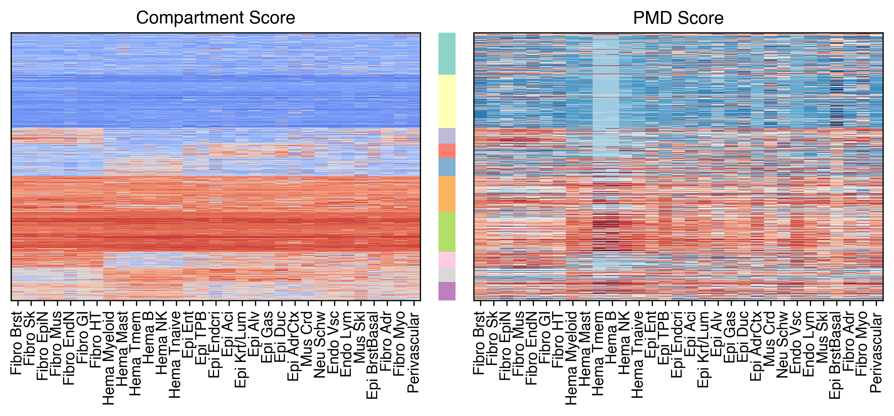
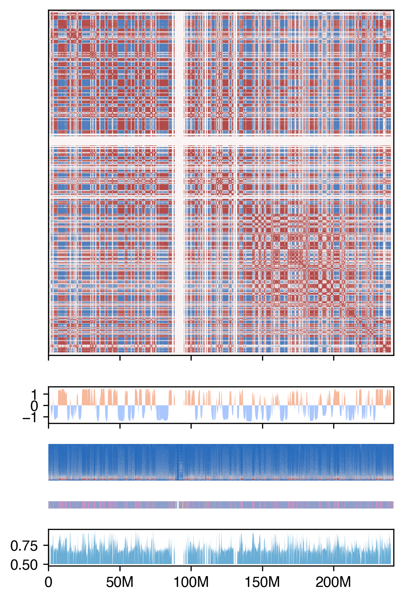
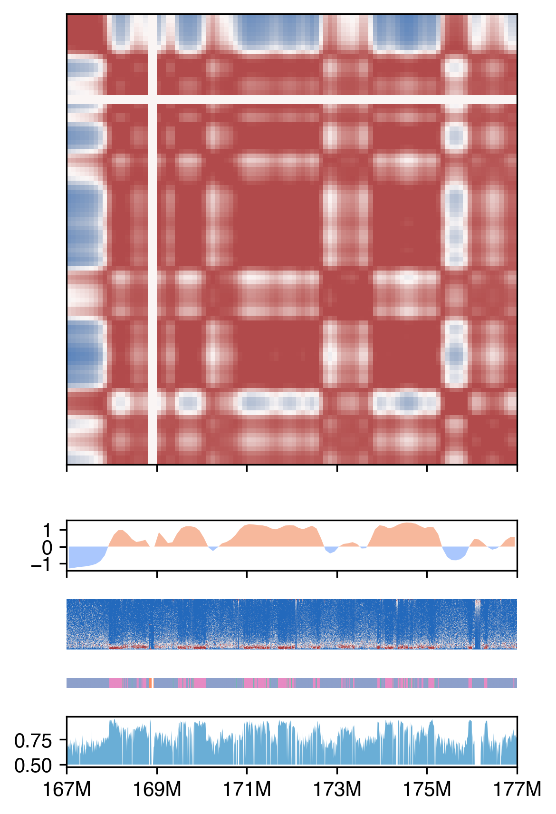

2. Comp pmd#
Part of the Fig. 5 chapter — see it for the panel-by-panel map. The first code cell sets ENTEX_ROOT and activates the no-overwrite guard (see the Reproduction guide). Outputs shown are the author’s original run.
📥 Required input files#
This notebook reads the following files (paths resolve from ENTEX_ROOT/REF_ROOT; the setup cell sets them). See the chapter’s inputs.md for RAW-vs-derived tags.
f'{indir}L1color.tsv'· metadata: colorf'{compdir}bin_stats.hdf'· otherf'{compdir}DifferentialResult/fdr_result/differential.intra_sample_combined.pcQnm.bedGraph'· otherf'{pmddir}merged_kmeans4_onehot.hdf'· PMD/methyl-compartmentf'{pmddir}{ct}_10kb_hist.h5ad'· PMD/methyl-compartment
# === Reproduction setup — edit ENTEX_ROOT / REF_ROOT for your machine ===
import os, sys
ENTEX_ROOT = os.environ.get('ENTEX_ROOT', '/large_storage/zhoulab/zhoujt/project/ENTEx')
REF_ROOT = os.environ.get('REF_ROOT', '/large_storage/zhoulab/ref')
BOOK_ROOT = os.environ.get('BOOK_ROOT', f'{ENTEX_ROOT}/analysis/HumanCellEpigenomeAtlas')
sys.path.insert(0, BOOK_ROOT)
os.chdir(f'{ENTEX_ROOT}/analysis') # original working directory
import repro_guard # no-overwrite guard (default: skip existing)
import numpy as np
import pandas as pd
import seaborn as sns
import matplotlib as mpl
import matplotlib.pyplot as plt
from matplotlib import cm as cm
import matplotlib.patches as patches
from scipy.stats import zscore, pearsonr, norm
from sklearn.cluster import KMeans
mpl.style.use('default')
mpl.rcParams['pdf.fonttype'] = 42
mpl.rcParams['ps.fonttype'] = 42
mpl.rcParams['font.family'] = 'sans-serif'
mpl.rcParams['font.sans-serif'] = 'Helvetica'
indir = f'{ENTEX_ROOT}/'
outdir = f'{indir}analysis/mC_compartment/'
compdir = f'{indir}analysis/diff_comp/all/'
pmddir = f'{indir}analysis/PMD/10kb/'
L1_meta = pd.read_csv(f'{indir}L1color.tsv', sep='\t', header=0, index_col=0)
L1_meta = L1_meta.drop(['c35', 'c36'], axis=0)
L1_annot = L1_meta['L1_abbr'].to_dict()
L1_color = L1_meta['color'].to_dict()
res = 100000
L1_color.update({L1_annot[k]: L1_color[k] for k in L1_annot if k in L1_color}) # also key by name
comp = comp.drop(['c10','c16','c14','c31'], axis=1)
data = data.rename({'c35':'c7'}, axis=1)
data = data.loc[comp.index, comp.columns]
def order_row(data, nc):
data = data.reset_index(drop=True)
# Perform KMeans clustering
kmeans = KMeans(n_clusters=nc, random_state=0, n_init=10)
clusters = kmeans.fit_predict(data)
# Create a new dataframe with cluster labels
cluster_df = pd.DataFrame({'Cluster': clusters}, index=data.index)
# Sort the data by cluster and plot the heatmap
merged_data = pd.concat([data, cluster_df], axis=1).groupby(by='Cluster').mean()
cg = sns.clustermap(merged_data, cmap='vlag', figsize=(6,4))
rorder = cg.dendrogram_row.reordered_ind.copy()
corder = cg.dendrogram_col.reordered_ind.copy()
leg = merged_data.index[rorder]
count = pd.Series(clusters).value_counts().loc[leg]
sorted_data = pd.concat([data[clusters==i] for i in leg], axis=0)
return sorted_data, count, cluster_df, corder
# Perform KMeans clustering
kmeans = KMeans(n_clusters=10, random_state=0, n_init=10)
clusters = kmeans.fit_predict(comp)
# Create a new dataframe with cluster labels
cluster_df = pd.DataFrame({'Cluster': clusters}, index=comp.index)
# Merge the cluster labels with the original data
merged_data = pd.concat([comp, cluster_df], axis=1)
# Sort the data by cluster and plot the heatmap
sorted_data = merged_data.groupby(by='Cluster').mean()
cg = sns.clustermap(sorted_data, cmap='vlag', figsize=(6,4),
xticklabels=sorted_data.columns.map(L1_annot))
rorder = cg.dendrogram_row.reordered_ind.copy()
corder = cg.dendrogram_col.reordered_ind.copy()
nc = 10
group_palette = sns.color_palette('Set3', nc)
tmp, count, label3c, corder = order_row(comp, nc=nc)
comptmp = pd.concat([comp[clusters==i] for i in sorted_data.index[rorder]], axis=0)
datatmp = data.loc[comptmp.index]
fig, axes = plt.subplots(1, 2, figsize=(10,4), sharex='all', sharey='all')
ax = axes[0]
ax.imshow(comptmp.values[:,corder], cmap='coolwarm', vmin=-3, vmax=3,
interpolation='none', aspect='auto')
ax = axes[1]
ax.imshow(datatmp.values[:,corder], cmap='vlag_r', vmin=-1, vmax=1,
interpolation='none', aspect='auto')
for i,ax in enumerate(axes):
ax.set_title(['Compartment Score', 'PMD Score'][i])
ax.set_xticks(np.arange(comp.shape[1]))
ax.set_xticklabels(comp.columns.map(L1_annot)[corder], rotation=90)
ax.set_yticks([])
fig.tight_layout()
fig.savefig(f'{outdir}comp_pmd_comporder_kmeans10.pdf', transparent=True)
nc = 10
group_palette = sns.color_palette('Set3', nc)
tmp, count, label3c, corder = order_row(comp, nc=nc)
fig, axes = plt.subplots(1, 3, sharey='all', figsize=(8.5,4), dpi=300,
gridspec_kw={'width_ratios': [12, 0.5, 12]}
)
ax = axes[0]
ax.imshow(tmp.iloc[:, corder].values, cmap='coolwarm', vmin=-2, vmax=2,
interpolation='none', aspect='auto', rasterized=True)
ax.set_title('Loop Strength', fontsize=10)
ax = axes[2]
ax.imshow(zscore(data.iloc[tmp.index, corder], axis=0).values, cmap='RdBu', vmin=-2, vmax=2,
interpolation='none', aspect='auto', rasterized=True)
ax.set_title('Compartment Score', fontsize=10)
for i,k in enumerate([0,2]):
ax = axes[k]
ax.set_title(['Compartment Score', 'PMD Score'][i])
ax.set_xticks(np.arange(comp.shape[1]))
ax.set_xticklabels(comp.columns.map(L1_annot)[corder], rotation=90)
ax.set_yticks([])
ax = axes[1]
offset = [0] + list(count.cumsum())
ax.axis('off')
for k in range(nc):
rect = patches.Rectangle((0, offset[k]), 1, offset[k+1]-offset[k], linewidth=0,
edgecolor='none', facecolor=group_palette[k])
ax.add_patch(rect)
fig.tight_layout()
fig.savefig(f'{outdir}comp_pmd_comporder_kmeans10_nonbrain.pdf', transparent=True)

for ct in comptmp.columns[corder]:
print(L1_annot[ct], pearsonr(comptmp[ct], datatmp[ct])[0])
Fibro Adr -0.4696066934544801
Fibro Mus -0.488204475529475
Fibro EpiN -0.4092487506238873
Fibro Brst -0.6363147255226962
Fibro Sk -0.5015807853394326
Fibro EndN -0.48612811021670777
Fibro GI -0.5193303214891105
Fibro HT -0.5377667939038807
Neu Exc 0.23433213931631366
Neu Inh 0.2193913440688712
Glia Astro -0.18097036348608214
Epi Endcri -0.5559560168217726
Glia Oligo -0.20502165304795908
Hema B -0.6287959638002504
Hema NK -0.7154698189121014
Hema Tmem -0.6426450032346182
Hema Tnaive -0.7157460346775558
Hema Mast -0.7307108281767946
Hema Myeloid -0.7660586777367807
Epi Aci -0.5392670248658549
Epi Duc -0.5084059919720998
Epi AdrCtx -0.588428026310207
Mus Crd -0.4430974858311366
Epi Krt/Lum -0.5901305184245133
Epi Alv -0.4220095270711217
Epi Gas -0.5571067103467813
Epi Ent -0.6305932933117723
Epi TPB -0.6801187051169961
Endo Vsc -0.7243881744539497
Endo Lym -0.647220047982146
Mus Skl -0.5508059275717501
Epi BrstBasal -0.4369336040409474
Neu Schw -0.4431504656168035
Fibro Myo -0.3644415663559445
Perivascular -0.6453634038115412
import pysam
def load_allc(ct, chrom, start, end):
global indir
allc_path = f'{indir}merged_allc/L1/CGN/{ct}.CGN-Merge.allc.tsv.gz'
idx, data_mc, data_cov = [], [], []
with pysam.TabixFile(allc_path) as allc:
allc_lines = allc.fetch(chrom, start, end-1)
for line in allc_lines:
_, pos, _, context, mc, cov, *_ = line.split("\t")
pos, mc, cov = int(pos), int(mc), int(cov)
idx.append(pos-start)
data_mc.append(mc)
data_cov.append(cov)
return np.array([idx, data_mc, data_cov])
def plot_bw(ct, nbins):
res = (end-start) // nbins
idx, tmp_mc, tmp_cov = load_allc(ct, chrom, start, end)
npos = len(idx)
mc_tmp, cov_tmp = np.zeros((2, end-start))
mc_tmp[idx] = tmp_mc
cov_tmp[idx] = tmp_cov
mc_tmp = mc_tmp[:res*nbins]
cov_tmp = cov_tmp[:res*nbins]
tmp = mc_tmp.reshape((-1, res)).sum(axis=1) / cov_tmp.reshape((-1, res)).sum(axis=1)
return tmp
# x = np.arange(len(tmp))
# # ax.plot(x, tmp, linewidth=0.01)
# ax.set_xlim([0, nbins])
# ax.set_ylim([ymin, 1.0])
# step = nbins//4
# ax.set_xticks(np.arange(0, nbins+1, step))
# ax.set_xticklabels([f'{xx//1e6}M' for xx in np.arange(start, end+1, step*res)], fontsize=10)
# ax.set_yticks([ymin, 1.0])
# # ax.set_yticklabels(ax.get_yticklabels(), fontsize=8)
# ax.fill_between(x, tmp, ymin, where=tmp >= ymin, facecolor=L1_color[ct], interpolate=True)
# ax.set_title(L1_annot[ct], fontsize=10)
# return res
ct = 'c1'
chrom = 'chr2'
indir_impute = f'{ENTEX_ROOT}/merged_cool_impute/100K/'
import cooler
cool_path = f'{indir_impute}L1/{ct}.cool'
cool = cooler.Cooler(cool_path)
Q = cool.matrix(balance=False, sparse=True).fetch(chrom).toarray()
Call = np.zeros(Q.shape)
Q = Q - np.diag(np.diag(Q))
selb = (comp.index.str.split('_').str[0]==chrom)
comptmp = comp.loc[selb, ct]
selb = comp.index.str.split('_').str[1].astype(int)[selb]
Q = Q[selb][:, selb]
decay = np.array([np.mean(np.diag(Q, i)) for i in range(Q.shape[0])])
E = np.zeros(Q.shape)
row, col = np.diag_indices(E.shape[0])
E[row, col] = 1
for i in range(1, E.shape[0]):
E[row[:-i], col[i:]] = (Q[row[:-i], col[i:]] + 1e-5) / (decay[i] + 1e-5)
E = E + E.T
C = np.corrcoef(np.log2(E + 0.001))
vmin, vmax = np.percentile(C, 5), np.percentile(C, 95)
C[C<vmin] = vmin
C[C>vmax] = vmax
print(vmin, vmax)
Call[np.ix_(selb, selb)] = C.copy()
-0.8367002022979049 0.90102755625968
compall = np.zeros(Call.shape[0])
compall[comptmp.index.str.split('_').str[1].astype(int)] = comptmp.copy()
resc = 100000
resm = 10000
start = 0
end = Call.shape[0]*resc
mcg = plot_bw(ct, nbins=Call.shape[0])
colors = {'CG':sns.color_palette('Blues',1),
'A':sns.color_palette('coolwarm',2)[1],
'B':sns.color_palette('coolwarm',2)[0]}
def num2str(num):
if num>=1e6:
num_str = f'{int(num//1e6)}M'
elif num>=1e3:
num_str = f'{int(num//1e3)}k'
else:
num_str = f'{num}'
return num_str
import anndata
adata = anndata.read_h5ad(f'{pmddir}{ct}_10kb_hist.h5ad')
adata.obs[['chrom','start','end']] = adata.obs.reset_index()['index'].str.split('-', expand=True).values
adata.obs[['start','end']] = adata.obs[['start','end']].astype(int)
adatatmp = adata[(adata.obs['chrom']==chrom)].copy()
mccomp = np.zeros(((end-start)//resm, 100))
mccomp[adatatmp.obs['start']//resm] = adatatmp.X.copy()
label = np.zeros((end-start)//resm) + 4
label[adatatmp.obs['start']//resm] = adatatmp.obs['kmeans4'].values
label = label.astype(int)
cluster_color = sns.color_palette('Set2', 4)
cluster_color = cluster_color + [(1,1,1)]
compcolor = np.array([cluster_color[xx] for xx in label])
# nbins = 2000
# start = 0
# end = 64000000
ymin = 0.5
xticks_3c = np.arange(0, Call.shape[0]+1, 500)
xticks_mc = np.arange(0, mccomp.shape[0]+1, 5000)
fig, axes = plt.subplots(5, 1, figsize=(4, 6), dpi=300, # sharex='all',
gridspec_kw={'height_ratios': [10,1,1,0.2,1]})
ax = axes[0]
ax.imshow(Call, cmap='vlag', vmin=-1, vmax=1, rasterized=True, interpolation='none')
ax.set_yticks([])
ax.set_xticklabels([])
ax.set_xticks(xticks_3c)
ax.set_xlim([-0.5, Call.shape[0]-0.5])
ax = axes[1]
ax.fill_between(np.arange(compall.shape[0]), compall, 0, where=compall >= 0, facecolor=colors['A'], interpolate=True)
ax.fill_between(np.arange(compall.shape[0]), compall, 0, where=compall <= 0, facecolor=colors['B'], interpolate=True)
ax.set_xlim([-0.5, Call.shape[0]-0.5])
ax.set_xticks(xticks_3c)
ax.set_xticklabels([])
ax = axes[2]
ax.axis('off')
vmax = np.percentile(mccomp,99)
ax.imshow(mccomp.T, cmap='vlag', aspect='auto', vmax=vmax, rasterized=True)
ax.set_xlim([-0.5, mccomp.shape[0]-0.5])
ax = axes[3]
ax.axis('off')
ax.imshow([compcolor], aspect='auto', rasterized=True)
ax = axes[4]
ax.fill_between(np.arange(mcgall.shape[0]), mcgall, ymin, where=mcgall >= ymin, facecolor=colors['CG'], interpolate=True)
ax.set_xlim([-0.5, Call.shape[0]-0.5])
ax.set_xticks(xticks_3c)
ax.set_xticklabels([num2str(xx*res) for xx in xticks_3c])
fig.tight_layout()
fig.savefig(f'{outdir}corr_comp_mCG.pdf', transparent=True)

# nbins = 2000
start = 167000000
end = 177000000
ymin = 0.5
xticks_3c = np.arange(0, (end-start)//resc+1, 20)
xticks_mc = np.arange(0, (end-start)//resm+1, 200)
fig, axes = plt.subplots(5, 1, figsize=(4, 6), dpi=300, # sharex='all',
gridspec_kw={'height_ratios': [10,1,1,0.2,1]})
ax = axes[0]
ax.imshow(Call[int(start//resc):int(end//resc)][:, int(start//resc):int(end//resc)],
cmap='vlag', vmin=-1, vmax=1, rasterized=True, interpolation='none')
ax.set_yticks([])
ax.set_xticks(xticks_3c-0.5)
ax.set_xticklabels([])
ax.set_xlim([-0.5, (end-start)//resc-0.5])
ax = axes[1]
comptmp = compall[int(start//resc):int(end//resc)]
ax.fill_between(np.arange(comptmp.shape[0]), comptmp, 0, where=comptmp >= 0, facecolor=colors['A'], interpolate=True)
ax.fill_between(np.arange(comptmp.shape[0]), comptmp, 0, where=comptmp <= 0, facecolor=colors['B'], interpolate=True)
ax.set_xticks(xticks_3c-0.5)
ax.set_xticklabels([])
ax.set_xlim([-0.5, (end-start)//resc-0.5])
ax = axes[2]
ax.axis('off')
vmax = np.percentile(mccomp,99)
comptmp = mccomp[int(start//resm):int(end//resm)]
ax.imshow(comptmp.T, cmap='vlag', aspect='auto', vmax=vmax, rasterized=True)
ax.set_xlim([-0.5, (end-start)//resm-0.5])
ax = axes[3]
ax.axis('off')
ax.imshow([compcolor[int(start//resm):int(end//resm)]], aspect='auto', rasterized=True)
ax.set_xlim([-0.5, (end-start)//resm-0.5])
ax = axes[4]
mcgtmp = mcgall[int(start//resc):int(end//resc)]
mcgtmp = plot_bw(ct, nbins=(end-start)//resm)
ax.fill_between(np.arange(mcgtmp.shape[0]), mcgtmp, ymin, where=mcgtmp >= ymin, facecolor=colors['CG'], interpolate=True)
ax.set_xlim([-0.5, (end-start)//resm-0.5])
ax.set_xticks(xticks_mc-0.5)
ax.set_xticklabels([num2str(start+xx*resm) for xx in xticks_mc])
fig.tight_layout()
fig.savefig(f'{outdir}corr_comp_mCG_zoomin.pdf', transparent=True)
